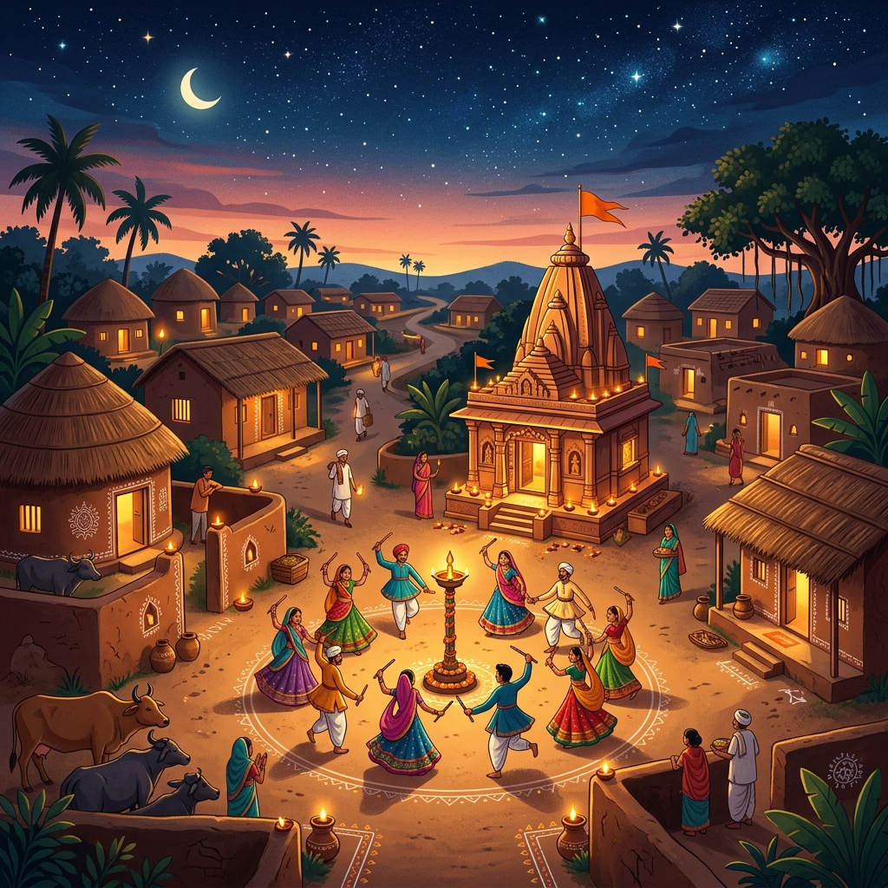

🌾 The Village That Gets Into Your Blood
There are places you visit. And then there are places that visit you — long after you've left, in the smell of rain on dry earth, in the sound of a dhol drum heard from across a field at dusk, in the warmth of a stranger's doorstep where chai appears before you've even finished saying hello.
Goradka, tucked into the folds of Gadhada Taluka in Bhavnagar District, Gujarat, is that second kind of place.
It is a peaceful and culturally rich village, known for its natural beauty and warm-hearted people — surrounded by farms and small temples, reflecting traditional values with a touch of modern growth. (For a closer look at our daily lifestyle, check out Village Life in Goradka)
That sentence is accurate. But it doesn't quite tell you what it feels like to stand at the edge of those farms at sunrise, the cotton-white light washing over 1,049 hectares of earth that generations of the same families have tilled, prayed over, buried their dead in, and called home.
Words like "peaceful" don't usually carry weight. Here, they do.
🌱 The Soil Knows Your Name
Goradka is home to 5,449 people across 950 families, with a sex ratio of 962 women per 1,000 men — notably higher than Gujarat's state average of 919. But behind each number: a grandmother who wakes before the sun. A farmer who reads the clouds better than any weather app. A child who runs barefoot between the temples and the library, equally at home in both.
Of the working population, 97.12% are engaged in main work — year-round livelihoods — with only 2.88% in marginal activity. (Read more about the resilience of our farmers in Farming & Agriculture)
That figure tells a quiet story about resilience. This is not a village that survives on luck or charity. It works. It earns. It endures. The agriculture that wraps Goradka in green and gold during harvest season is not a romantic backdrop — it is the engine of daily life, the reason 950 families know that tomorrow will come and that it will probably look a great deal like yesterday, which is not a bad thing. Stability, in a world obsessed with disruption, is deeply underrated.
The Kathi Darbar community, the Ahirs, the Brahmans, the Rabaris, the Bharvads — different castes, different traditions, different gods on different walls — all sharing the same dust, the same wells, the same sky.
A village is not a postcard. It is a negotiation. A daily, mostly wordless agreement to belong to each other.
🌙 Nine Nights That Stop Time
Here is the truth about Navratri in a village like Goradka: it is nothing like what you see on Instagram.
There are no professional sound systems shaking a stadium floor. No Bollywood celebrity spinning on a raised stage. No designer lehengas photographed under ring lights.
What there is — what there really is — happens at Mataji Mandir as the evening call to prayer fades and the first dhol beat drops into the cooling night air.
Villagers gather at Mataji Mandir to celebrate Navratri, where everyone joins in traditional Garba and Dandiya with joy, devotion, and cultural pride. (See pictures of this in our Photo Gallery)
Everyone. That word is doing enormous work in that sentence. The grandmother who can barely bend her knees still sways at the edge of the circle. The young men who left for Surat or Ahmedabad or Mumbai come home for these nine nights specifically — pulled back by something that city life cannot offer or replace. The children who have never been taught the steps somehow already know them, because they've watched them every year since before they could walk.
Garba originated in the villages of Gujarat, where it was — and continues to be — performed in communal gathering spaces in the center of the village with the entire community participating.
Not an audience and a performer. An entire community, moving together.
The dancers move in a counter-clockwise circle, using simple movements while singing and clapping in unison. Starting with slow circular movements, the tempo slowly builds up to a frenzied whirling.
That build — slow to frenzied — mirrors something in the human spirit that no algorithm has yet managed to replicate. The restraint at the beginning. The surrender at the end. Nine nights of this. Nine nights of forgetting that you are tired, worried, in debt, lonely, uncertain about the future. Nine nights of being nothing more and nothing less than a body moving in a circle with your people, under the stars, around a flame.
The circular arrangement is emblematic of the Hindu concept of time, perceived as cyclical — birth, life, death, and rebirth. Within this perpetual motion, the sole constant is the Goddess at the center.
And in Goradka, that center holds.
🕉️ The Temple at the Heart of Everything
Every village has a building that is more than a building.
The Shiv Temple of Goradka is a serene and spiritual center nestled in the heart of the village. Surrounded by lush greenery and peaceful surroundings, the temple holds deep religious and cultural importance. Every day, devotees come to offer prayers, while special festivals like Mahashivratri and the holy month of Shravan see large gatherings filled with devotion, bhajans, and rituals. The temple is not just a place of worship, but also a symbol of unity, tradition, and the spiritual heritage of Goradka.
I want you to sit with the phrase "not just a place of worship." Because that's the part that outsiders miss. (Dive deeper into our traditions reading Culture & History)
In a village, the temple is the courthouse, the community center, the rumor mill, the school, the grief support group, the marriage bureau, and the open-air concert hall. It is where decisions get made that no Panchayat meeting ever formally records. It is where a man who has had a terrible year comes to sit quietly in the shadow of something larger than his own fear.
During Mahashivratri, Goradka's Shiv Temple does not merely host a religious event. It becomes the village's heartbeat — visible, audible, felt in the chest.
Shravan — the holy month when devotees fast and pray across all of Saurashtra — turns the temple into a daily gathering point. Women in the morning. Men in the evening. Children weaving through both. The bhajans rising and falling with the breeze off the surrounding farms.
This is what "cultural heritage" actually means when you strip away the tourism brochure language. Not a monument. A living practice. A room that is always lit.
📚 The Library Nobody Expected
Here is the detail about Goradka that stopped me completely when I found it.
The Goradka Village Library is described as the heartbeat of Goradka, where knowledge and culture live together. With inspiring portraits of great leaders and shelves full of wisdom, it offers guidance to every learner. Students and villagers find peace there to read, study, and grow — it is not just a library, but a place of unity, inspiration, and lifelong learning.
A village library. That people actually use. That someone cared enough to build, stock, and describe as the heartbeat of the village.
Goradka's literacy rate stands at 71.01%, with male literacy at 83.31% and female literacy at 58.37%.
That gap between men and women — twenty-five percentage points — is the village's clearest wound. And the library is, in its quiet way, the bandage being applied. Not by an NGO from Ahmedabad or a government scheme from Gandhinagar. By the village itself. By portraits of great leaders on the walls. By shelves that welcome whoever shows up, regardless of what they know or don't know yet. (The library is pivotal for our Smart Village Future)
There's something almost defiant about a village library. It says: we believe our children deserve to know things. We believe the future is worth reading toward.
That belief — stubborn, unspectacular, profoundly necessary — is perhaps the most Gujarati thing about Goradka.
🌿 What Goradka Teaches the Rest of Us
I've written about a lot of places. Smart cities. Tech corridors. Urban renewal projects with eight-figure budgets and TED Talk spokespeople.
None of them have given me what Goradka's story gives me.
In Gorada — and in villages like it across Saurashtra — culture and tradition are living, breathing entities that shape the present and guide the future. As rituals echo through the hills and celebrations fill the air, the village stands as a testament to the enduring strength of its roots.
Living. Breathing. Not preserved behind glass. Not performed for visitors. Simply practiced — every morning, every festival, every harvest, every prayer, every story told to a child at the edge of a field.
What Goradka teaches the rest of us is this: belonging is not something you find. It's something you tend. Like a field. Like a flame at the center of a Garba circle.
You show up. You move in circles with your people. You keep the light lit.
That's all. That's everything.
❓ FAQ: The Questions People Actually Ask About Goradka
Q: What is the cultural significance of Goradka village in Gujarat?
A: Goradka is a village in Gadhada Taluka, Bhavnagar District, that embodies traditional Gujarati village life — with an active Shiv Temple, a vibrant Navratri celebration at Mataji Mandir, a functioning village library, and a farming community with deep-rooted Saurashtra cultural traditions passed down across generations.
Q: How is Navratri celebrated in Goradka village?
A: In Goradka, Navratri is celebrated at Mataji Mandir with traditional Garba and Dandiya Raas — the entire village community participates, as opposed to spectating. It is a devotional community event centered on worship of the goddess, not a staged performance, and reflects the original village origins of the Garba dance form.
Q: What is Garba and why does it matter in villages like Goradka?
A: Garba is a ritualistic and devotional dance performed during Navaratri, dedicated to the worship of feminine energy or Shakti. It fosters social equality by diluting socio-economic, gender, and religious structures. In villages like Goradka, it remains a genuinely communal act — not entertainment, but lived devotion.
Q: Is there a library in Goradka village?
A: Yes. Goradka has a village library that serves students and community members alike, described locally as a center of unity, inspiration, and lifelong learning — an unusual and admirable feature for a rural village of its size.
Q: What is daily life like in Goradka, Gujarat?
A: Daily life in Goradka revolves around agriculture, family, and community ritual. The vast majority of working residents — over 97% — have stable year-round livelihoods, mostly farming-based. The village's calendar is shaped by Hindu festivals, temple rhythms, seasonal harvests, and the school year — a deeply rooted, self-sustaining way of life.
✨ Conclusion: You Can Leave — But Goradka Doesn't Leave You
The people who grew up in Goradka and moved to cities — Surat, Rajkot, Mumbai, maybe further — carry something with them that the city never quite dissolves.
The particular gold of the light in October before Navratri. The smell of the temple's incense blending with the smell of harvested earth. The sound of the dhol the moment the first evening star appears.
Goradka has 5,449 people according to the last census. But its real population includes everyone who ever called it home, wherever they are now.
That's the thing about a village that tends its culture the way Goradka does. It becomes part of you permanently. You can leave the soil. The soil doesn't leave you.
If Goradka is your village — or if you carry a village like it in your chest — this story is for you. Share it with someone who needs to remember where they come from.